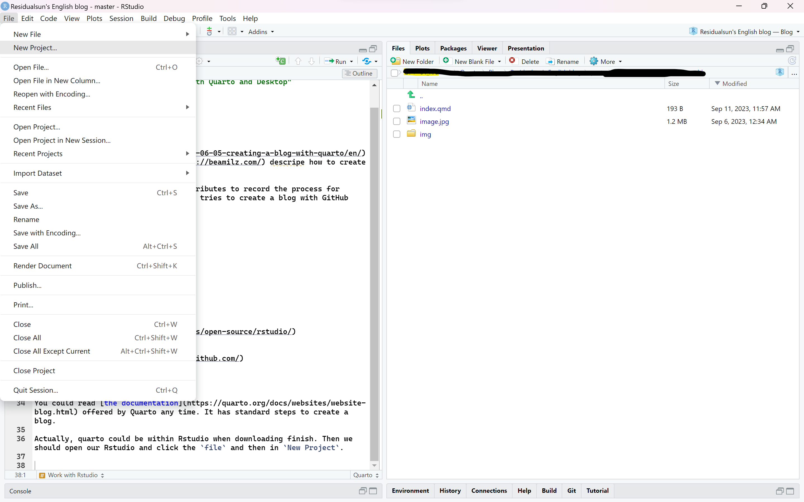
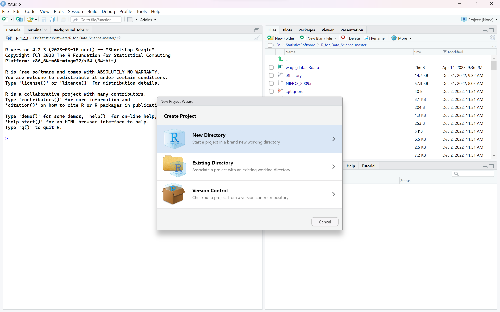
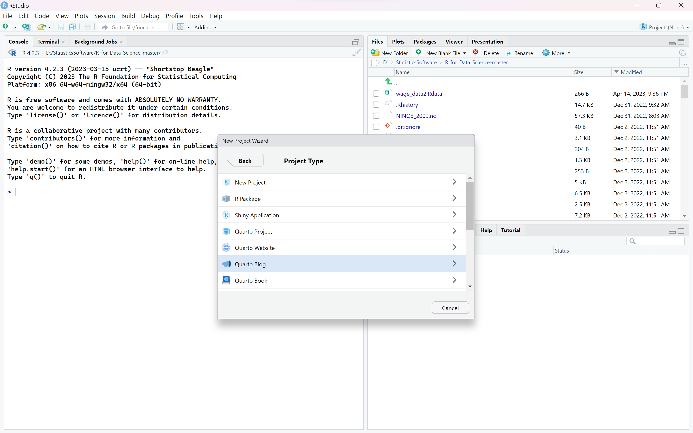
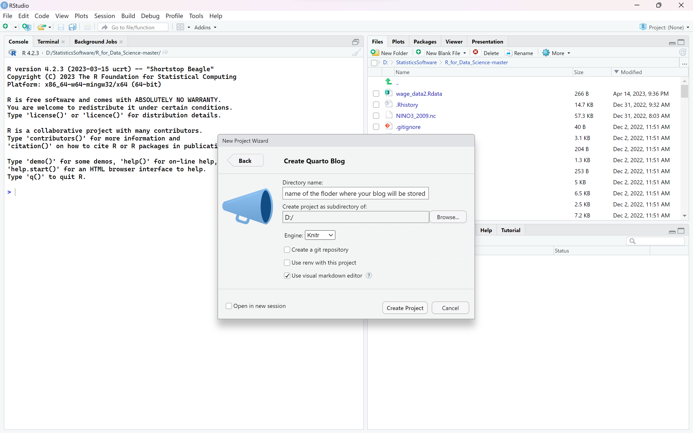
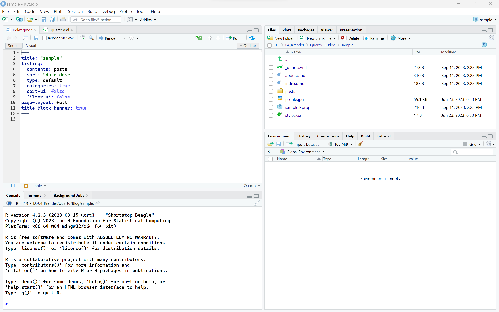
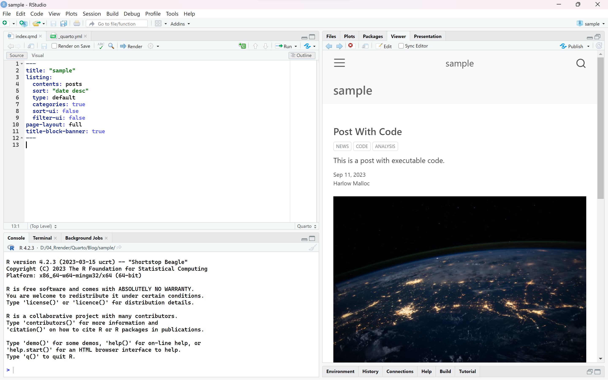
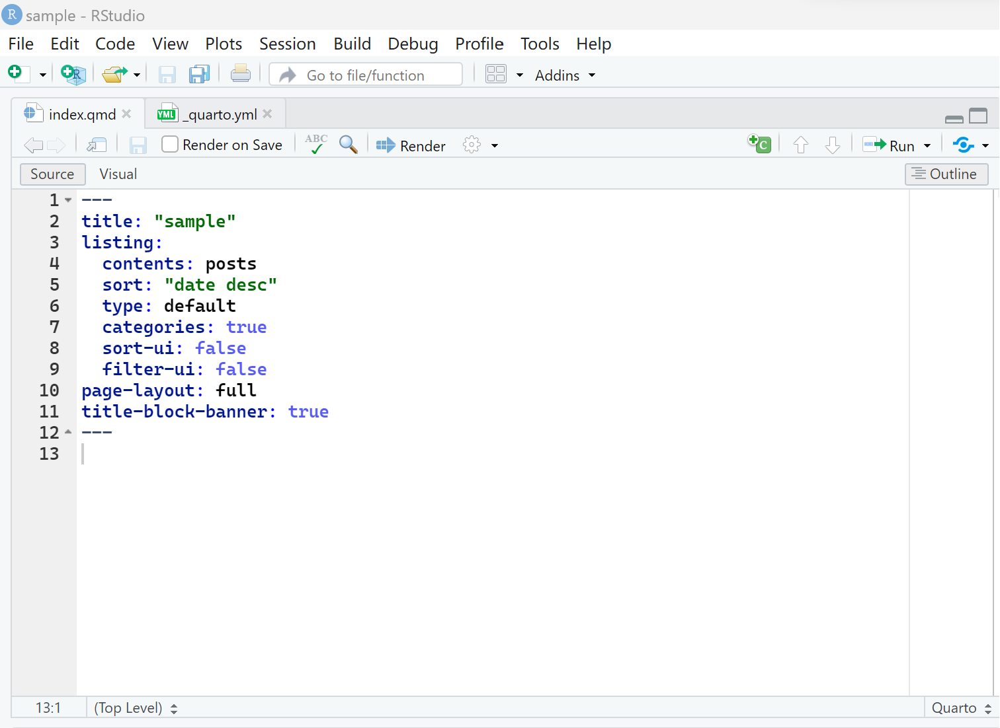
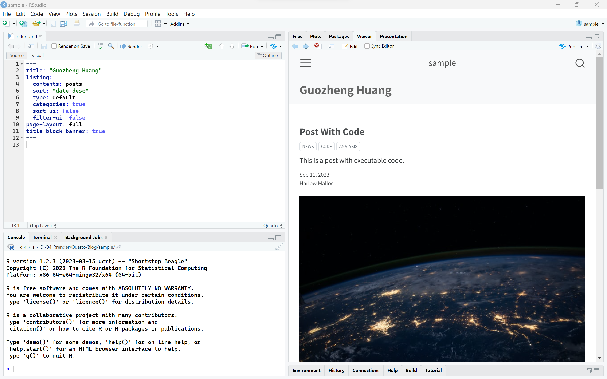

Ahead of my blog, there has been a blog which was written by Bea Milz descripe how to create a blog belong to someone.
This blog was inspired by it and contributes to record the learning process for myself. May it would help someone who tries to create a blog with GitHub Desktop rather than Git.
Let’s begin!
1.Prerequisites
Install
You should have all of the softwares blew.
And you should have a GitHub account and I assume you could get the basic hang of it.
2.Work with Rstudio
You could read the documentation offered by Quarto any time. It has standard steps to create a blog.
2.1.Create
Actually, quarto could be within Rstudio when downloading finish. Then we should open our Rstudio and click the file and then in New Project.

Choose New directory.

Scroll down until you find Quarto Blog

Click it and then you would see such an interface.

Directory name means place where you want floder of blog to be stored.Create project as subdirectory of means place where you want all of the floders concerning blog to be saved. Generally, I save it in D drive.
This is a demo.

index.pmd and _quarto.yaml are crucial files.They control arrangement and appearance of your blog. We will discuss it in details later.
2.2.Preview
Stay in this interface and click Render in index.qmd file, you would preview your own blog in right window.

At this point, you have basically created a simple blog.
3.Modified blog
Rather than creating a GitHub account(as what I have said formly), I would like to modify and decorate the blog firstly. What attracts me most in this process is exploring the funtion of index.qmd and _quarto.yaml file.
Cause I still explore how to use Quarto, this section may contain something wrong and would be sometimes updated.
Welcome to point out my fault and problem in comments;-).
3.1.「index.qmd」

OK, let’s look at this interface.I will introduce default setting and then supply something necessary.
In Quarto blog, index.qmd would be always used. We can divide it into two uses. One is set for your blog homepage, the other is set for your single article.
3.1.1.For homepage
title determine your homepage name. listing includes a series of settings for your decoration in homepage.
I change the title into my name, and it presents as blew.

3.1.2.For single article
Quarto needs a lot of 「index.qmd」 file, it is really different from blogdown. When you want to write a article, it is necessary to add a new 「index.qmd」file. For convenience,